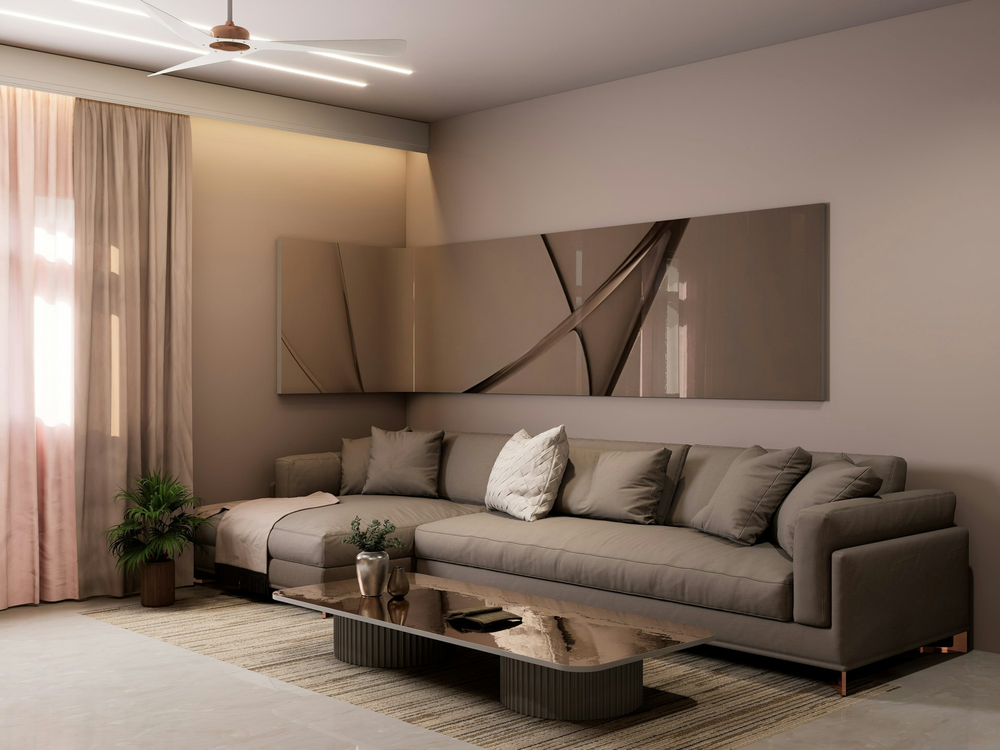
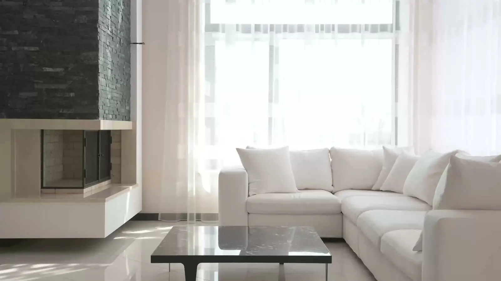
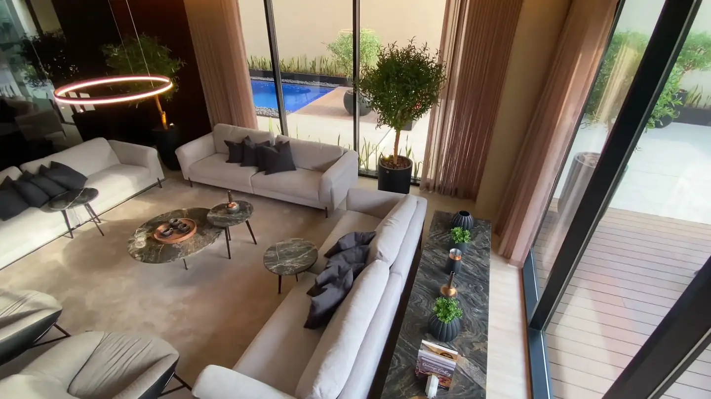
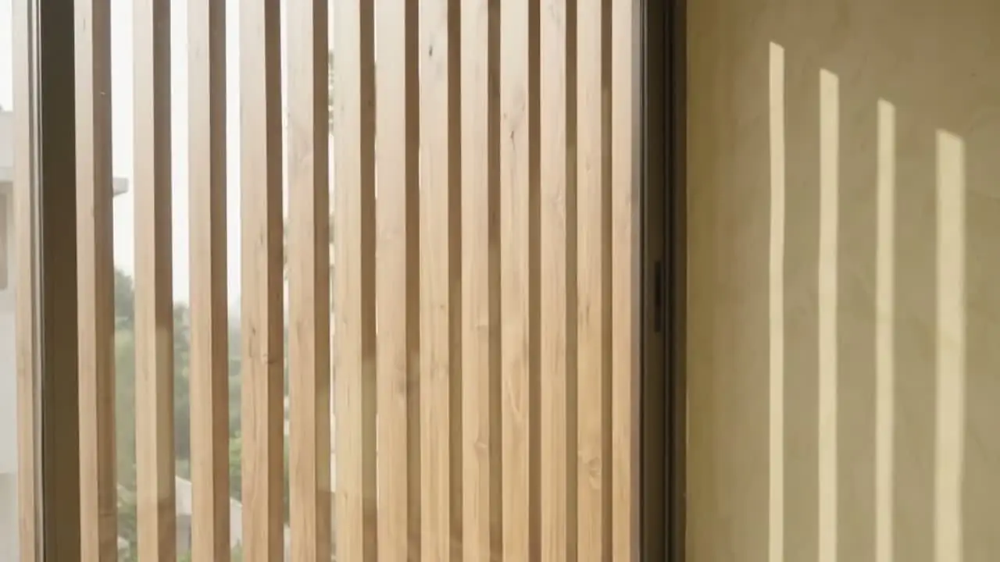

The studio
Spaces shaped by light,
materials, and you.
A Bangalore studio designing homes, offices and interiors across India. From the first sketch to the last cushion.
Meet the studioSelected work
A collection of six spaces


Our approach
The quiet
details matter.
Natural materials. Familiar textures. Room for everyday life.
How we workLiving · linen and oak
Dining · cane and paper light
Light · timber louvres



Begin a conversation